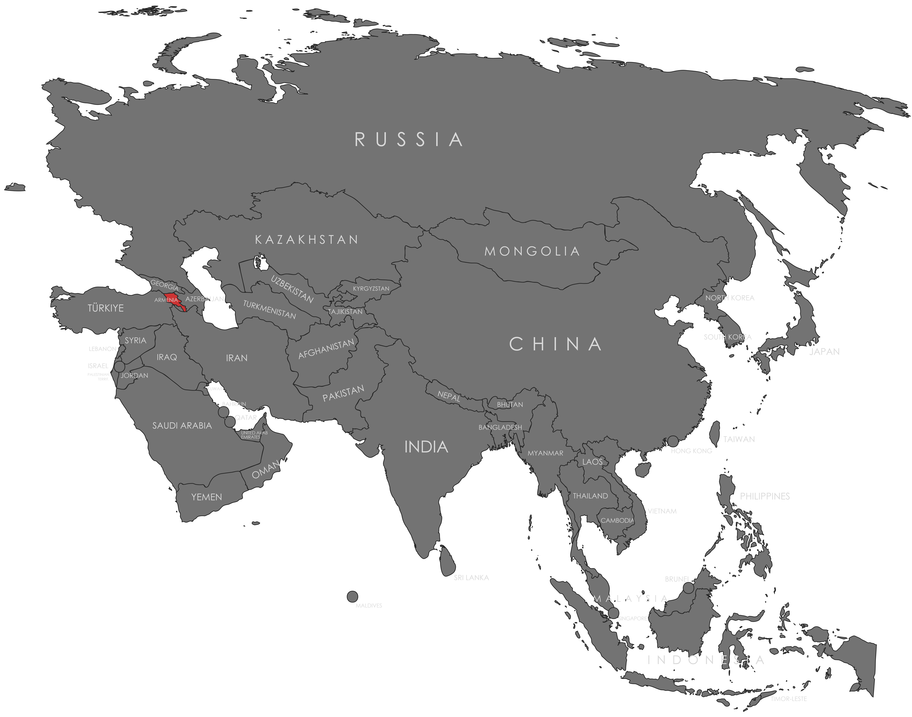

Specifications
- Local Name: Հայաստան (Hayastan)
- Proportion: 1:2
- Name of the Flag: Tricolor of Armenia
- Adopted: August 24, 1990
Symbolism
- Red: The blood of those who fought for freedom, Armenia’s independence, and the survival of its people
- Blue: The peaceful skies of Armenia and the will of the people to live under peaceful conditions
- Orange: The hard-working nature, creativity, and courage of the Armenian people
- Three equal horizontal stripes: Unity and harmony in Armenian heritage
Colors:
Shapes / Symbols:
Meaning / Special Display
- The flag represents national pride and the enduring spirit of the Armenian people.
- It is flown during national celebrations, memorial days, and state ceremonies to honor Armenia’s identity and history.
Description
- The flag reflects Armenia’s struggle, resilience, and continued hope for peace and prosperity.
- For its citizens, it symbolizes unity, cultural heritage, and the strength to overcome adversity across generations.

Return to Gallery